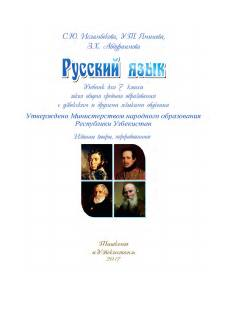

RT7-sinf rus tili fani bo'yicha o'quv qo'llanma va darslik.
Mazkur darslik umumiy o'rta ta'lim maktablarining 7-sinflari uchun mo'ljallangan bo'lib, rus tilini ikkinchi til sifatida o'rganishga yordam beradi. Kitobda turli mavzular, jumladan kasb-hunar va mutaxassisliklar haqida matnlar, grammatik qoidalar va amaliy mashqlar berilgan.